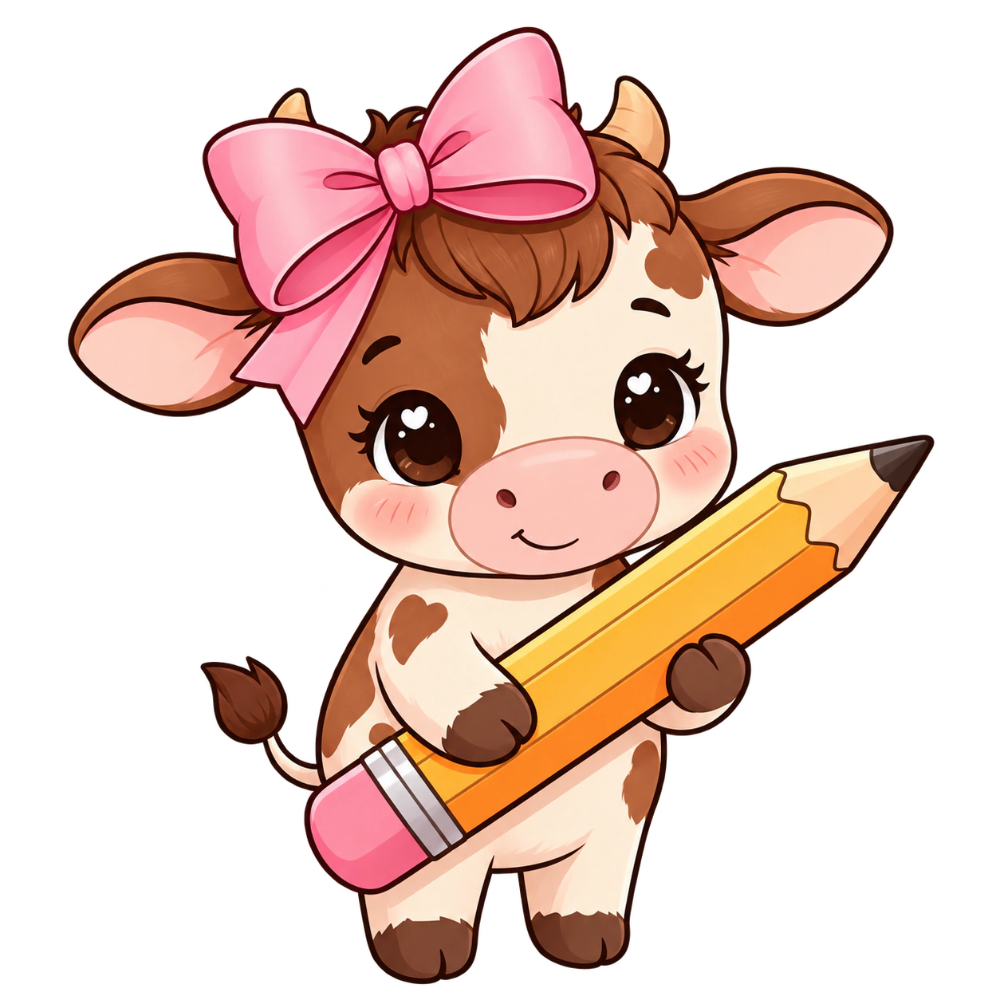

A gente conversa.
Conhecemos seu negócio, entendemos seu momento e ouvimos o que você quer construir.
ESTÚDIO CRIATIVO DE MÍDIAS SOCIAIS
Na memória. Na conversa. Na escolha.
Estratégia e conteúdo para fazer a sua marca ser vista e lembrada.

01 / UM OLHAR, MUITAS POSSIBILIDADES
O que faria ele parar na sua marca?
A gente começa por essa pergunta.
ESTUDOS CRIATIVOS · CONCEITOS ILUSTRATIVOS, NÃO TRABALHOS DE CLIENTES
BONITO CHAMA ATENÇÃO. COM PROPÓSITO, CRIA CONEXÃO.
A gente escuta a sua história.
Encontra a sua voz.
E cria com a sua essência.
02 / DO PLANO À PUBLICAÇÃO
Um trabalho que conecta estratégia,
criação e consistência.
03 / CRIATIVA POR NATUREZA
Por trás de cada marca,
tem alguém que acredita nela.
A Milly Moo é uma agência de gestão de mídias sociais que une estratégia, criação e cuidado para dar forma à essência do seu negócio.
Queremos conhecer o que torna sua marca única. Porque uma comunicação que conecta começa com uma escuta de verdade.
Chegue mais no Instagram04 / SIMPLES PRA VOCÊ. BEM PENSADO POR NÓS.
Conhecemos seu negócio, entendemos seu momento e ouvimos o que você quer construir.
Alinhamos a voz, a criação e o planejamento para comunicar com a sua cara.
Criamos, alinhamos com você e cuidamos da continuidade do conteúdo nas redes.
05 / A GENTE DESCOMPLICA
BOAS MARCAS MERECEM BOAS CONVERSAS.
O PRÓXIMO OI PODE SER O SEU.Conte sua ideia. Mostre sua marca.
A gente pensa nos próximos passos com você.